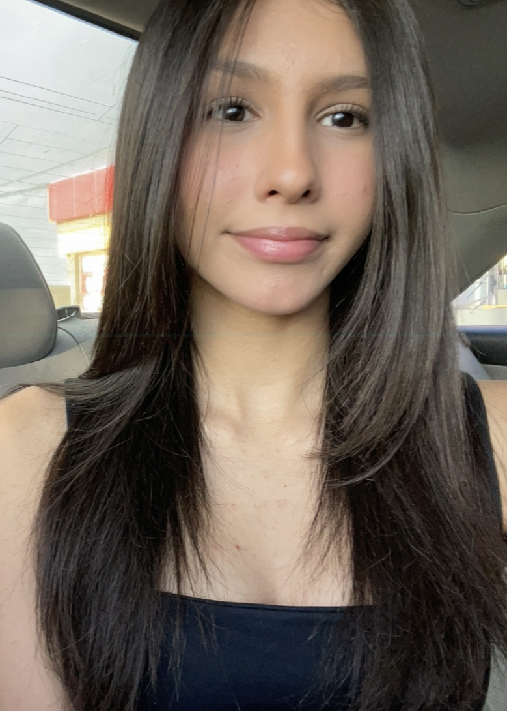

My Resume
My Resume:
Ximena Carranza Garcia

Summary
I'm responsable and a very hard working person with a lot of experience.
Education
- Bachelor of Architecture - Universidad de Sonora, Hermosillo (2018-2022).
Work Experience
Inter Architect - Direccion de Obras Publicas, Ayuntamiento de Hermosillo
Participated in field visits for mesurements and documentation.
Assisted in creating architectural drawings and urban layout proposals.
Junior Assistant - - Construcciones del Desierto S.A. de C.V.
Supported lead architects in reviewing blueprints and layouts.
Prepared presentations and client proposals using Microsoft Office and Canva.
Skills
Excellent leader in team work.
Creative and ingenious.
Customer service.
Awards and Certifications
- 1st Place - Student Architecture Desing Contest, Universidad de Sonora (May 2020)
Other